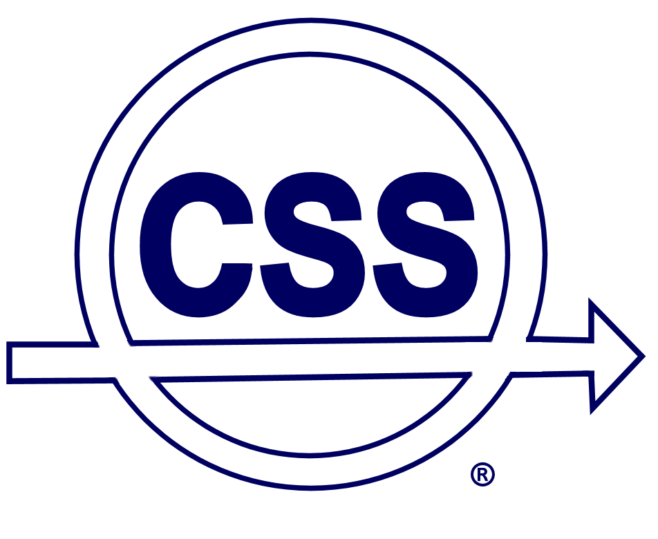

Committees for HSCC 2019
Program Committee Chairs
Necmiye Ozay, University of Michigan, USAPavithra Prabhakar, Kansas State University, USA
Program Committee
Alessandro Abate, University of Oxford, UKErika Abraham, RWTH Aachen University, Germany
Matthias Althoff, TU München, Germany
Ebru Aydin Gol, Middle East Technical University, Turkey
Christel Baier, TU Dresden, Germany
Stanley Bak, Safe Sky Analytics, USA
Sergiy Bogomolov, Australian National University, Australia
Samuel Coogan, Georgia Institute of Technology, USA
Jonathan DeCastro, Toyota Research Institute, USA
Jyotirmoy Deshmukh, University of Southern California, USA
Ruediger Ehlers, University of Bremen, Germany
Lu Feng, University of Virginia, USA
Goran Frehse, Université Grenoble Alpes, France
Jie Fu, Worcester Polytechnic Institute, USA
Sicun Gao, UC San Diego, USA
Miriam Garcia Soto, IST Austria, Austria
Khalil Ghorbal, Inria, France
Ichiro Hasuo, National Institute of Informatics, Japan
Joao Hespanha, UC Santa Barbara, USA
Jianghai Hu, Purdue University, USA
Franjo Ivancic, Google, USA
Jean-Baptiste Jeannin, University of Michigan, USA
Taylor T Johnson, Vanderbilt University, USA
Raphael Jungers, UC Louvain, Belgium
Maryam Kamgarpour, ETH Zurich, Switzerland
James Kapinski, Toyota, USA
Atreyee Kundu, IISc Bangalore, India
Jerome Le Ny, Polytechnique Montreal, Canada
Jun Liu, University of Waterloo, Canada
Rupak Majumdar, Max Planck Institute, Germany
Ian Mitchell, University of British Columbia, Canada
Dejan Nickovic, Austrian Institute of Technology, Austria
Meeko Oishi, University of New Mexico, USA
Michael Posa, University of Pennsylvania, USA
Maria Prandini, Politecnico di Milano, Italy
Akshay Rajhans, MathWorks, USA
Vasumathi Raman, Nuro, USA
Matthias Rungger, ABB, Germany
Dorsa Sadigh, Stanford University, USA
Ricardo Sanfelice, UC Santa Cruz, USA
Sriram Sankaranarayanan, University of Colorado Boulder, USA
Sanjit Seshia, UC Berkeley, USA
Krishna Shankaranarayanan, IIT Bombay, India
Zhikun She, Beihang University, China
Ashish Tiwari, Microsoft, USA
Ashutosh Trivedi, University of Colorado Boulder, USA
Jana Tumova, Royal Institute of Technology, Sweden
Mahesh Viswanathan, University of Illinois at Urbana-Champaign, USA
Rafael Wisniewski, Aalborg University, Denmark
Majid Zamani, TU München, Germany
Publicity Chair
Taylor T. Johnson, Vanderbilt University, USADemo and Poster Session Chair
Jun Liu, University of Waterloo, CanadaRepeatability Evaluation Chair
Sergiy Bogomolov, Australian National University, AustraliaRepeatability Evaluation Committee
Chuchu Fan, University of Illinois at Urbana-Champaign, USAMarcelo Forets, University of the Republic, Uruguay
Shromona Ghosh, University of California, Berkeley, USA
Bardh Hoxha, Southern Illinois University, USA
Md. Ariful Islam, Texas Tech University, USA
Zhihao Jiang, ShanghaiTech University, China
Nikolaos Kekatos, Univ. Grenoble Alpes, France
Soonho Kong, Toyota Research Institute, USA
Hui Kong, Max Planck Institute, Germany
Ratan Lal, Kansas State University, USA
Marco Muniz, Aalborg University, Denmark
Adina M. Panchea, École Polytechnique, France
Rajarshi Ray, National Institute of Technology, Meghalaya, India
Christian Schilling, Institute of Science and Technology Austria, Austria
Stefan Schupp, RWTH Aachen, Germany
Sadegh Soudjani, Newcastle University, UK
Timothy Wang, United Technologies Research Center, USA
Junxing Yang, Stony Brook University, USA
Aditya Zutshi, Galois Inc., USA
David Šafránek, Masaryk University, Czech Republic
Steering Committee
Rajeev Alur, University of Pennsylvania, USAWerner Damm, OFFIS, Germany
Martin Fränzle, Univ. of Oldenburg, Germany
John Lygeros, ETH Zurich, Switzerland
Oded Maler, Verimag, France
Paulo Tabuada, UCLA, USA
Claire Tomlin, University of California Berkeley, USA
Webmaster
Ratan Lal, Kansas State UniversitySponsors
 |
 |  |
||
 |
 |
|||
Contact
email HSCC19 PC Chairs
© Copyright 2014-19 HSCC